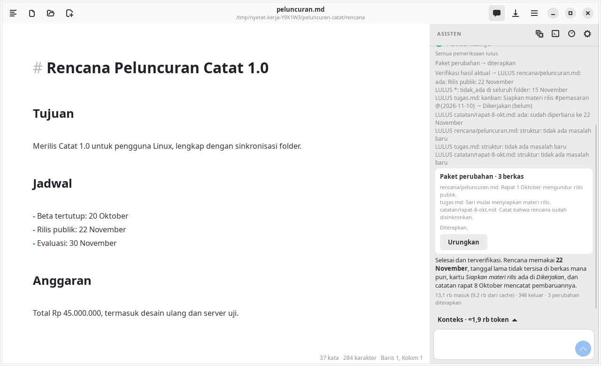

Agent
Rencana dan verifikasi
Untuk permintaan yang butuh beberapa langkah, agent menyusun rencana yang terlihat di panel, mengerjakannya lewat usulan, lalu memeriksa hasil sungguhan sebelum menyatakan selesai.

Rencana pekerjaan
Agent memanggil atur_pekerjaan untuk mencatat tujuan dan sampai 20 langkah, masing-masing berstatus pending, done, atau blocked. Rencana tampil di panel dan diperbarui saat ada kemajuan.
Status pekerjaan: berjalan, tertunda, gagal, atau selesai dan terverifikasi. Status selesai hanya bisa dicapai bila semua langkah done dan verifikasi lulus.
Verifikasi hasil
Setelah perubahan diterapkan, agent memanggil verifikasi_pekerjaan dengan kriteria dari permintaan Anda. Verifikasi membaca ulang isi disk atau editor (bukan cache), lalu memeriksa:
| Jenis | Memeriksa |
|---|---|
ada / tidak_ada | Teks persis wajib ada atau tidak ada di sebuah berkas, atau di seluruh folder dengan berkas "*", mis. memastikan tanggal lama tidak tersisa di mana pun |
kanban | Kartu berada di daftar tertentu dengan status selesai/belum tertentu |
struktur | Jumlah sel tabel, heading kosong atau melompat level, blok kode yang tidak ditutup, dan tautan ke berkas Markdown yang tidak ada |
Untuk tiap berkas yang diubah, verifikasi otomatis menambahkan pemeriksaan struktur, memastikan berkas yang dihapus atau dipindah memang tidak ada di tempat lamanya, dan mewajibkan setidaknya satu kriteria dari agent.

Struktur dibandingkan dengan isi sebelum pekerjaan dimulai. Masalah lama disebut di hasil, tetapi tidak menggagalkan pekerjaan.
Melanjutkan pekerjaan
Rencana, journal tindakan, dan hasil verifikasi tersimpan bersama percakapan. Bila aplikasi ditutup atau koneksi terputus di tengah jalan, buka lagi percakapannya: tombol Lanjutkan pekerjaan muncul dan agent meneruskan dari langkah terakhir. Lihat Pemulihan.
Yang belum dibuktikan
Verifikasi membuktikan kriteria konkret, bukan seluruh konsistensi makna dokumen. Mutu pemeriksaan masih bergantung pada kriteria yang dipilih agent; belum ada pemeriksaan kontradiksi otomatis.